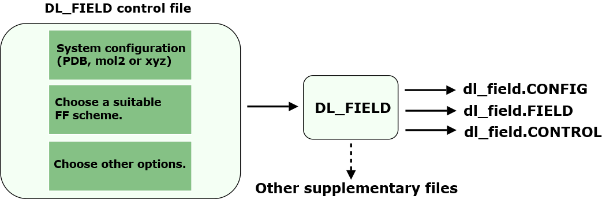

Structures and operations¶
This page illustrates the software structural aspects and provide brief summary how it works.

File structures
DL_FIELD package comes with the following file components:
- DL_FIELD program source in the source/ directory.
- Data library files in the lib/ directory. This is the master library that contains force field data for all available FF schemes.
Each FF scheme consists of the following components:
- Molecular structure file, with filename ends with the extension .sf.
- Potential parameter file, with filename ends with the extention .par.
- Other supplementary files depending on the FF schemes.
The lib/ directory also contains the following files:
- The DL_F Notation data file, DLF_Notation.
- Atom type conversion data file, dl_field.atom.
- DL_FIELD control file.
- Solvent templates, in the solvent/ directory.
- A collection of utility program scripts, in the utility/ directory.
- The output/ directory. This is where the DLPOLY’s FIELD and CONFIG files will be produced.
- Some example structures, in the Examples/ directory.
- The control_files/ directory, which contains a collection of DL_FIELD’s control files that read the molecular strucutres in the Examples/ directory.
- The dl_f_path file, that specifies the directory paths of various file components, relative to the DL_FIELD home directory. The location and filename of the DL_FIELD control file is also specified here. The home directory is the directory path where the DL_FIELD executable file, dl_field.exe, is located. The dl_f_path and dl_field.exe must always locate in the same directory path.
Operations
Diagram below shows schematically how to run DL_FIELD.
{kind=link}
Firstly, you would need to supply an input configuration file, in PDB, mol2 or xyz format. Then, choose a suitable FF scheme and select other options to produce a desire FF model. These are all operated within a DL_FIELD control file. After that, run DL_FIELD and it will produce the corresponding dl_field.CONFIG and dl_field.FIELD files in the output/ directory, which can be renamed as CONFIG and FIELD files, respectively for DL_POLY runs.
DL_FIELD operates by using a set of simple directives, instead of using some kind of scripting language. These directives will be indicated in CAPITAL ITALICS. Optional directives will be enclosed in [SQUARE BRACKETS].
DL_FIELD jargons will be indicated in Capital Letters. Some DL_FIELD-specific notations will also be described in ALL CAPITAL LETTERS. A list of expressions can be found in the document Jargons.
If you wish to have a quick taste how DL_FIELD operates, go to this page - Ready, get set, go.
Program execution
The steps below show what happens when DL_FIELD is run:
- Read dl_f_path.
- Read DL_FIELD control file.
- Carry out atom_typing procedures to obtain ATOM_TYPEs. DL_FIELD will use the following typing approaches, depending on the FF schemes and input file format:
- Template matching - Looking for suitable MOLECULE templates in sf data files (for PDB input files).
- Molecular topology analysis (for xyz and mol2 input files).
- Combination of both (for xyz input files).
- Assign force field parameters, usually obtained from the par data files.
- Produce dl_poly.CONFIG, dl_poly.FIELD and dl_poly.CONTROL files.